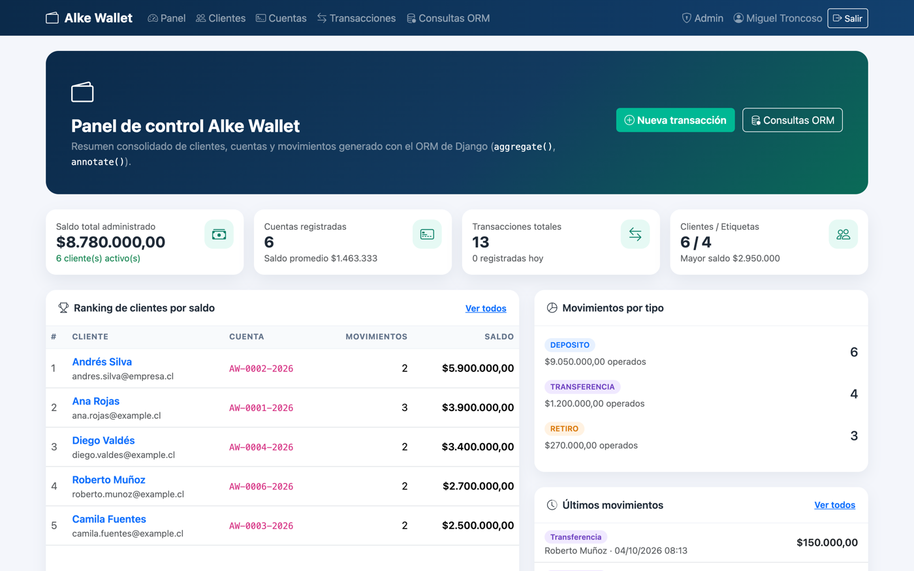
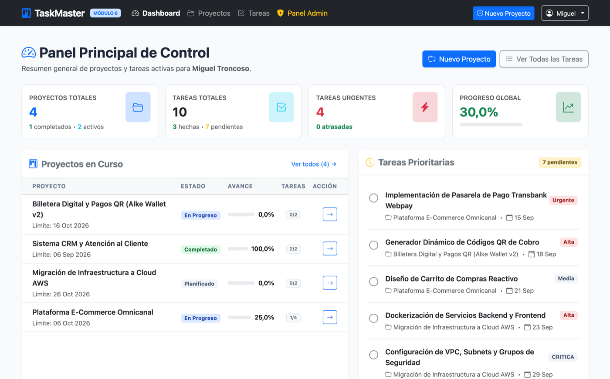
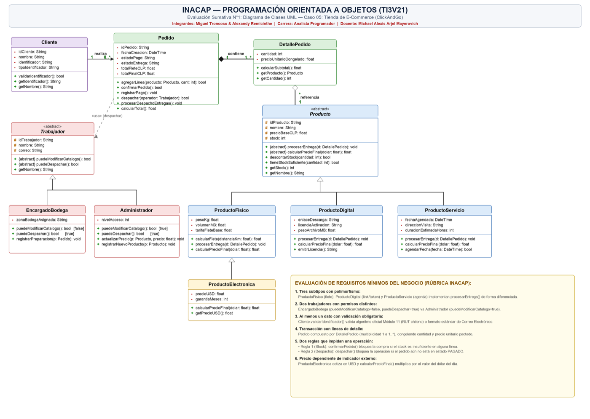

Lenguajes
- Python 3 (POO, funciones, módulos)
- SQL (DDL, DML, joins, agregaciones)
- HTML5, CSS3 y JavaScript básico
- Bash / terminal
Portafolio digital · Módulo 8
Desarrollador Web Junior — Python · Django · SQL
Construyo aplicaciones web con Django: modelado de datos, ORM, operaciones CRUD, consultas personalizadas y pruebas automatizadas. Vengo de una formación intensiva en desarrollo de software y busco mi primera oportunidad profesional en el sector IT.
Sobre mí
Perfil junior con foco en backend: me interesa resolver problemas reales de datos, cuidar la integridad de la información y documentar cada decisión técnica.
Vengo de una formación intensiva en desarrollo de software (bootcamp) donde trabajé desde los fundamentos de Python y las bases de datos relacionales hasta el desarrollo de aplicaciones web completas con Django.
En el camino construí una billetera digital, una plataforma de gestión de proyectos y un e-commerce de consola con persistencia en SQLite, integración con una API externa y un guion de pruebas automatizadas. En cada entrega prioricé tres cosas: que el producto funcione, que los datos se mantengan íntegros y que cualquiera pueda entenderlo leyendo el repositorio.
Hoy busco un rol trainee o junior donde pueda aportar en el backend con Python/Django y, al mismo tiempo, seguir creciendo en APIs, testing, Docker y servicios en la nube.
Sistema de consola ClickAndGo: POO, SQLite, DAO, API del dólar y guion de pruebas P01–P19.
Plataforma TaskMaster: autenticación, CRUD, dashboard y 18 pruebas automatizadas.
Billetera digital Alke Wallet: relaciones 1:1, 1:N y M:N, migraciones, consultas y 36 pruebas.
Este sitio: marca personal, caso de estudio técnico y análisis FODA orientado al mercado IT.
Habilidades técnicas
Tecnologías que utilicé en proyectos reales del curso.
raw() y cursoresunittest, Django TestCase)Portafolio de proyectos
Cada proyecto resuelve una problemática concreta y fue documentado, versionado y probado.

Caso de estudioBilletera digital con Django
Aplicación web para administrar clientes, cuentas y transacciones financieras, con saldos consistentes, panel administrativo y consultas avanzadas al ORM.

Plataforma de gestión de proyectos y tareas
Sistema web con registro de usuarios, control de acceso por propietario y un dashboard con indicadores de avance de proyectos y tareas.
LoginRequiredMixin y UserPassesTestMixin.
E-commerce de consola con persistencia SQLite
Sistema de ventas por consola que gestiona clientes, productos, pedidos y trabajadores, con separación por capas (DAO/servicios) e indicador del dólar.
mindicador.cl para el valor del dólar.Caso de estudio
Alke Wallet · el proyecto más desafiante de mi recorrido formativo.
Desarrollar una billetera digital en Django que permita administrar clientes, cuentas y transacciones (depósitos, retiros y transferencias), con un modelo de datos relacional, CRUD completo, panel administrativo y consultas personalizadas al ORM.
Garantizar que el saldo nunca quede inconsistente: validar retiros sin fondos, impedir transferencias a la misma cuenta y asegurar que dos operaciones simultáneas no corrompan el saldo, todo dentro de un modelo con relaciones 1:1, 1:N y M:N.
select_for_update).clean()) y refuerzo en save() para el uso directo del ORM.LoginRequiredMixin y formularios con CSRF.Investigación de empresa
Empresa real del sector tecnológico donde me gustaría trabajar, analizada desde una perspectiva técnica.
| Dimensión | Qué me atrae y por qué |
|---|---|
| Valores y propósito | Democratizar la inversión con productos simples, transparentes y de bajo costo, promoviendo el ahorro de largo plazo por sobre la especulación. |
| Tipo de productos | Fondos mutuos, ahorro automático, APV y herramientas de planificación; todo empaquetado en una experiencia digital y fácil de usar. |
| Tecnologías | Python como lenguaje central, bases de datos relacionales, servicios en la nube (AWS) y fuerte trabajo de datos e integraciones financieras. |
| Metodologías de trabajo | Equipos pequeños y autónomos, iteraciones cortas, revisión de código y automatización: el mismo enfoque que apliqué en mis proyectos. |
| Enfoque en innovación | Pioneros en fondos indexados de bajo costo en Chile y en automatizar decisiones financieras complejas con datos. |
PLUS · Análisis personal
Lectura honesta de mi punto de partida para insertarme en el mercado IT.
Contacto
Estoy disponible para oportunidades trainee o junior en desarrollo web, backend Python/Django o análisis de datos. También acepto feedback sobre este portafolio.